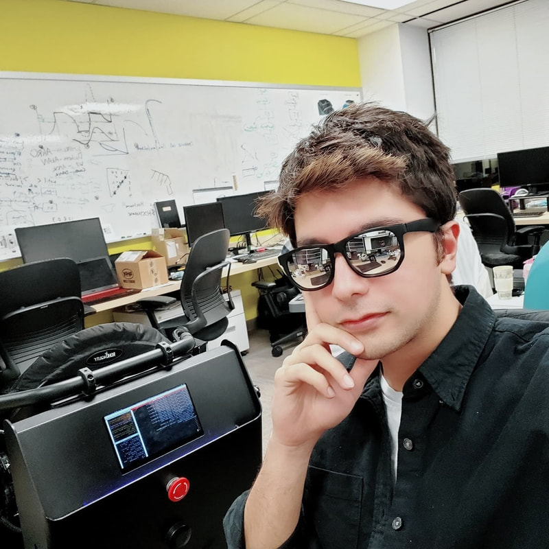
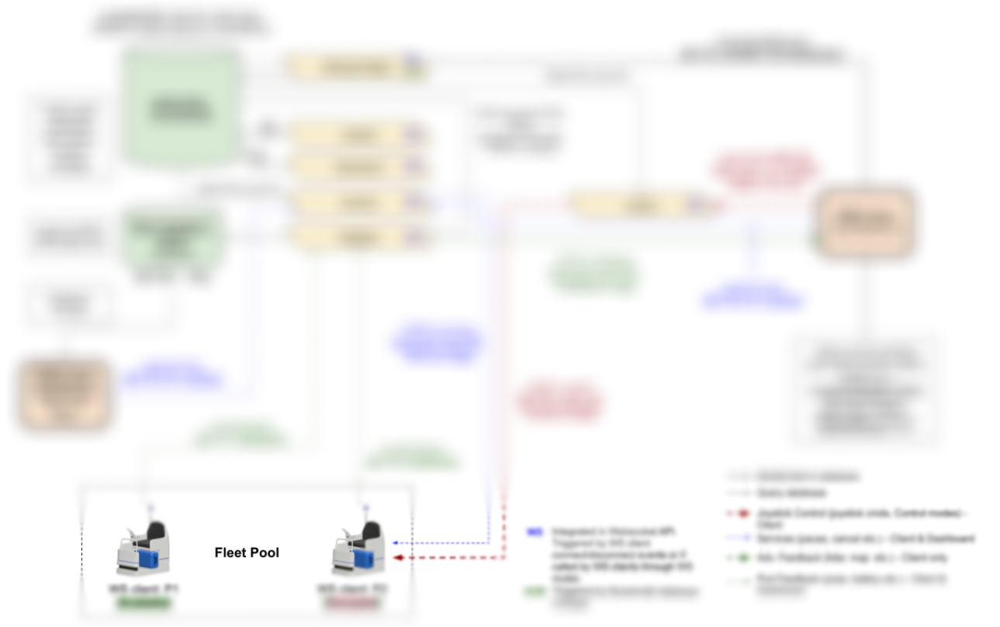

ENGINEERING PORTFOLIO / WALEED UDDIN
From cloud services
to physical systems.

About me
I’m Waleed, a robotics developer with a master’s in Mechatronics Design. My work spans cloud APIs, embedded controls, cybersecurity, and autonomous systems, alongside personal builds and academic research.
Explore the projects ↓Cloud & APIs
4 WORK PROJECTS
01 / WORK PROJECT
Third-Party Flight Data API Integration | Cirium
Connecting flight, gate, and status data with airport robotics operations.
View project ↗
02 / WORK PROJECT
Fleet data & analytics
An end-to-end data pipeline connecting robot events, airport operational data, and fleet analytics.
View project ↗
03 / WORK PROJECT
Fleet connectivity on AWS
A cloud backend supporting live robot status and persistent remote connections.
View project ↗
04 / WORK PROJECT
Fleet management platform
Web and mobile tools for fleet operations, busy-gate awareness, and automatic robot detours.
View project ↗